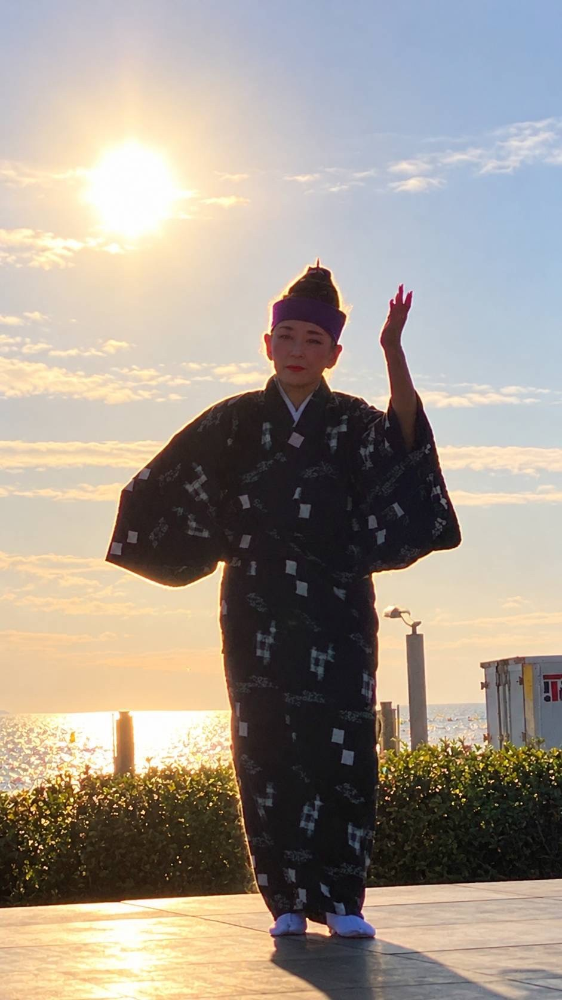
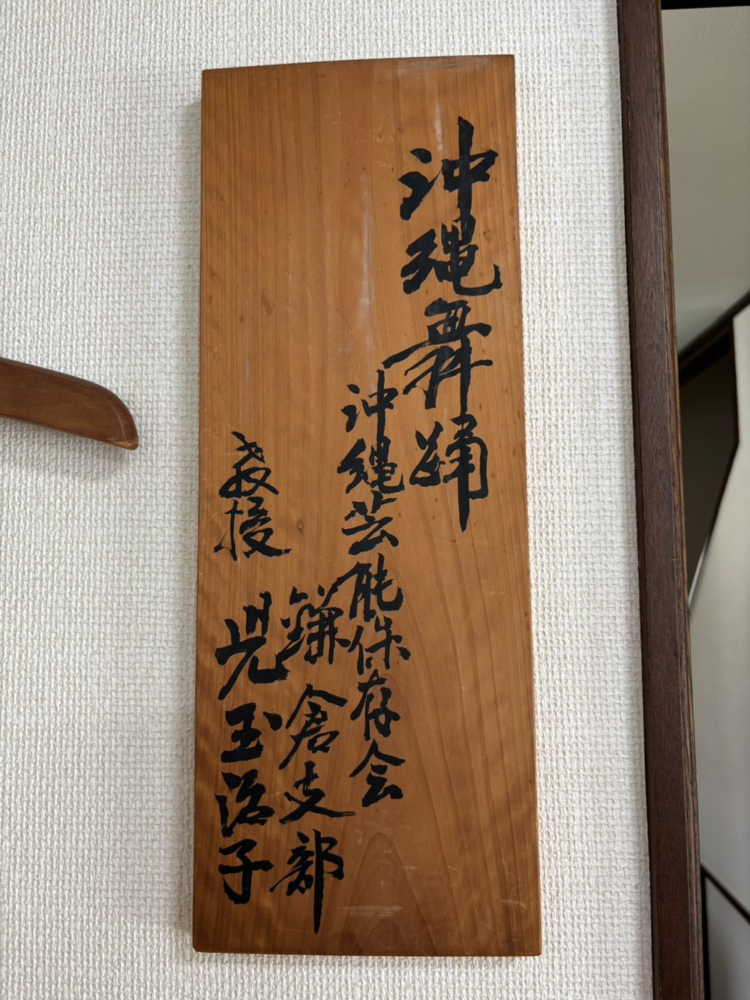
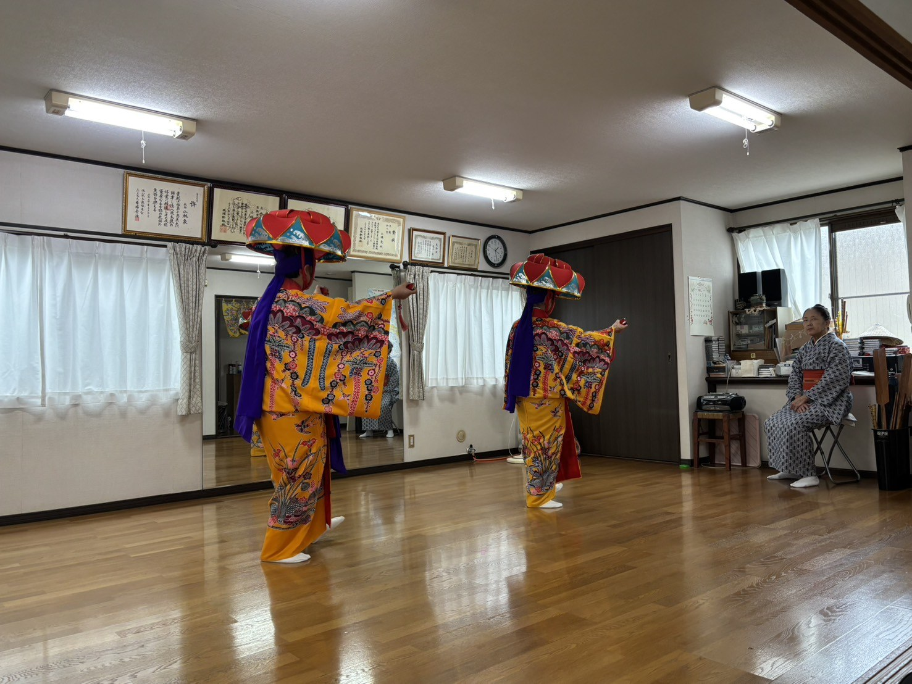
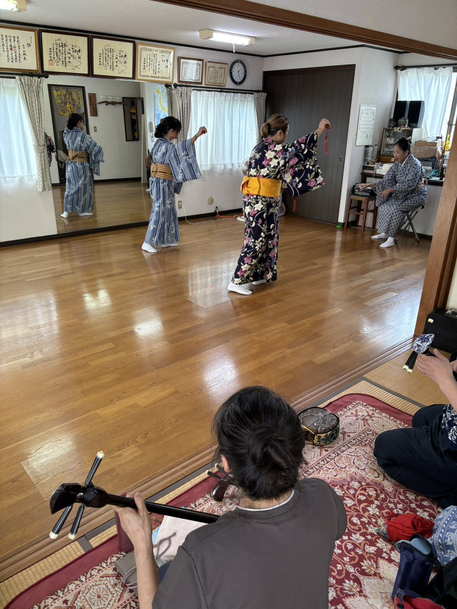
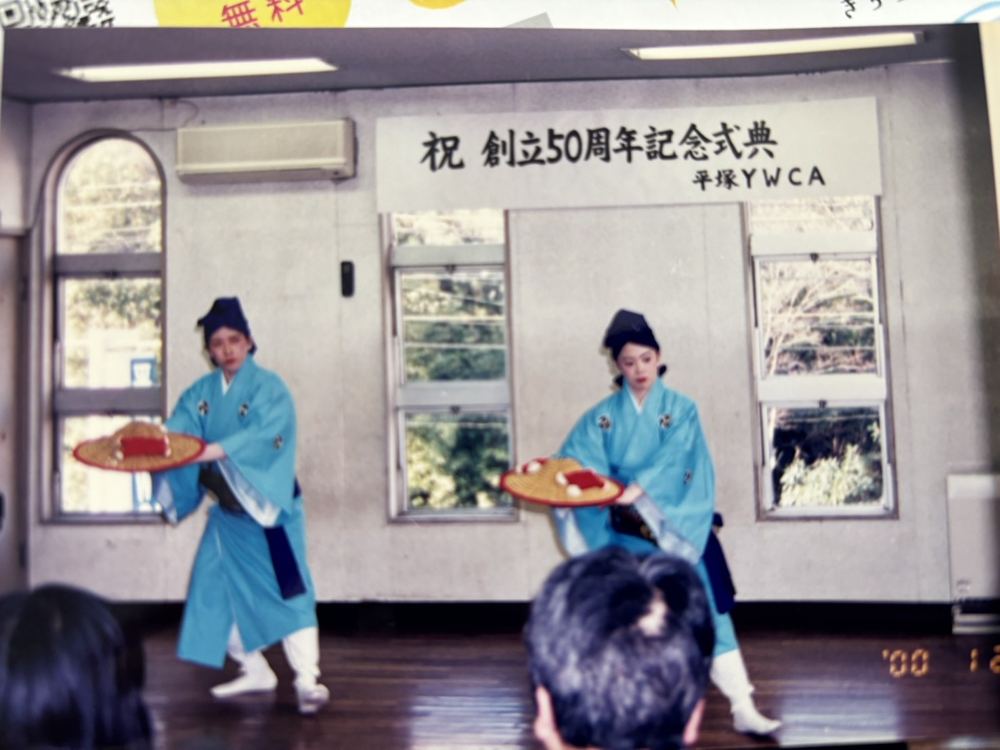
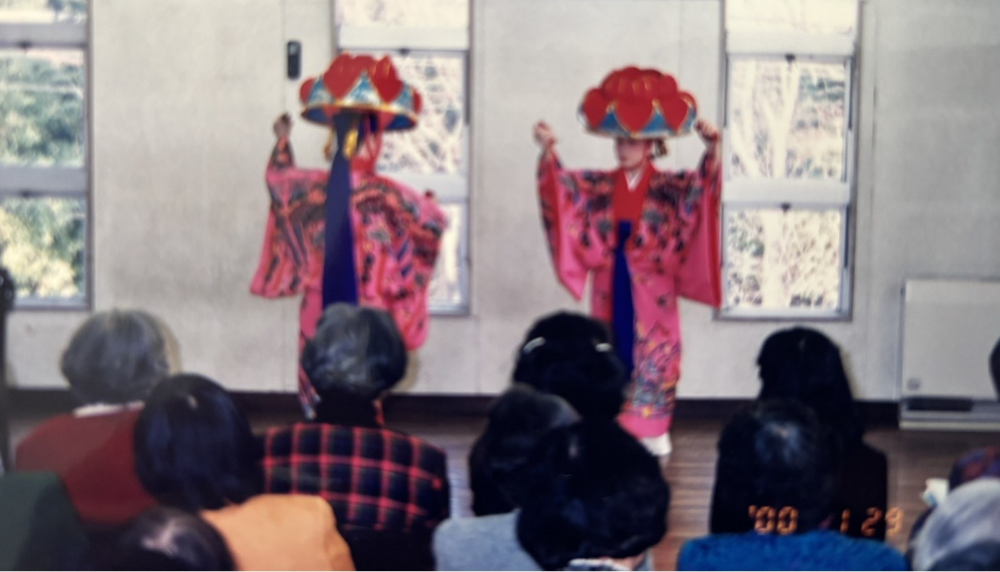
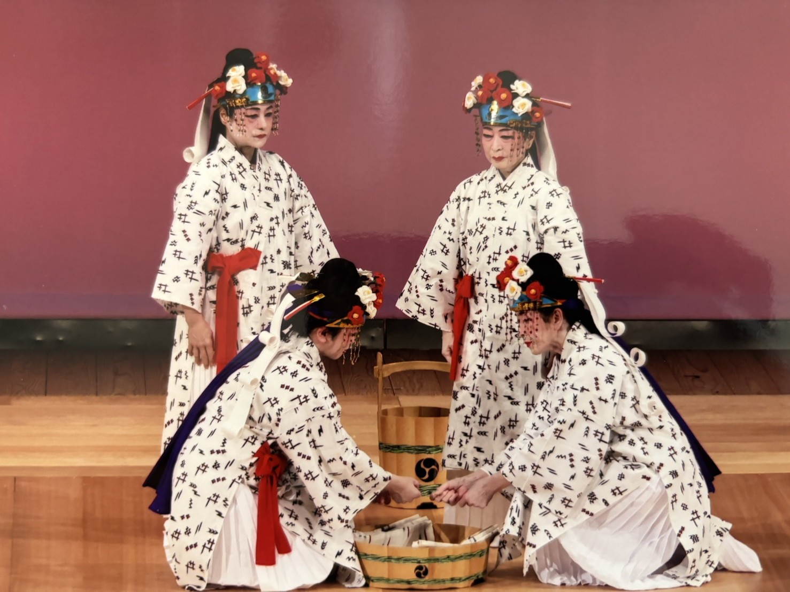
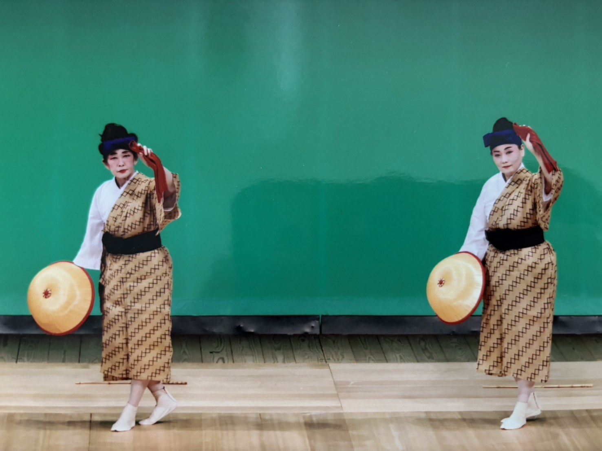

美しい所作
姿勢や足の運び、手の動きなど、琉球舞踊ならではの表現に触れます。

琉球舞踊は、沖縄で育まれてきた伝統芸能です。琉球王国の宮廷芸能に由来する古典舞踊をはじめ、暮らしや人々の心を表現する舞踊など、さまざまな魅力があります。
音楽と一体となったしなやかな動きや、手先・足運びの美しさ。静かな所作の中にも、豊かな情感が息づいています。

姿勢や足の運び、手の動きなど、琉球舞踊ならではの表現に触れます。
三線の音色と歌に耳を傾け、音楽とともに舞う楽しさを味わいます。
踊りを通して、沖縄の歴史や伝統、美意識への理解を深めます。
鏡のある稽古場で、舞踊の所作や音楽に合わせた動きを練習する様子です。

お稽古風景 1
お稽古風景 2教室の活動として、年に何回か舞台があります。
琉球舞踊の衣装や所作、舞台の彩りをご覧ください。

舞台写真 1
舞台写真 2
舞台写真 3
舞台写真 4鎌倉・深沢にある琉球舞踊教室です。
個別のお稽古時間や詳しい所在地は、教室へご確認ください。
皆さん初心者からスタートしています。ゆっくり丁寧にご指導させていただきますので、ご安心ください。
浴衣などの着物を着てお稽古をします。実際に舞台に立つ際に必要な衣装や小道具などは教室でお貸ししております。詳細はご相談ください。
見学・体験については、お問い合わせページよりご相談ください。
お稽古や教室についてのお問い合わせ